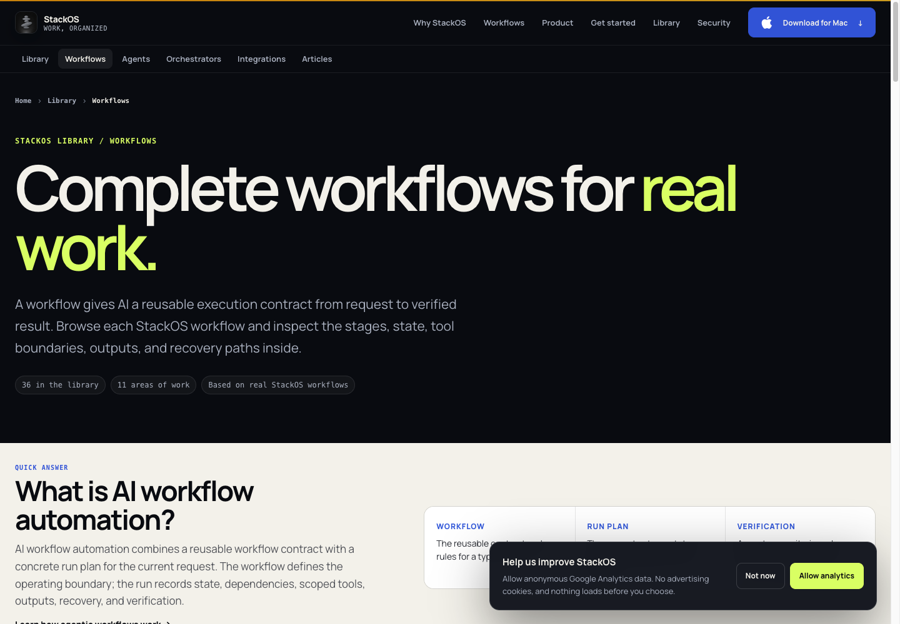
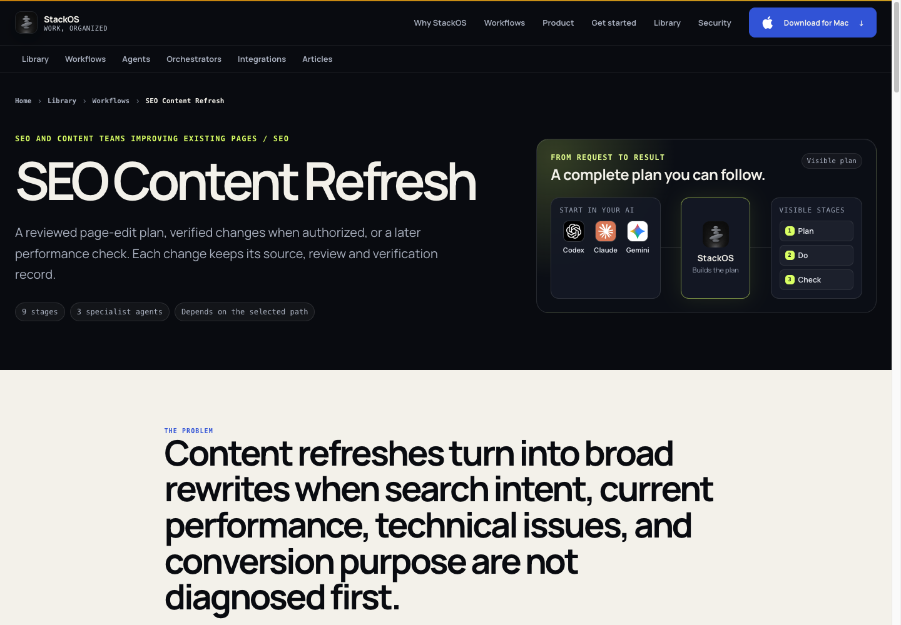
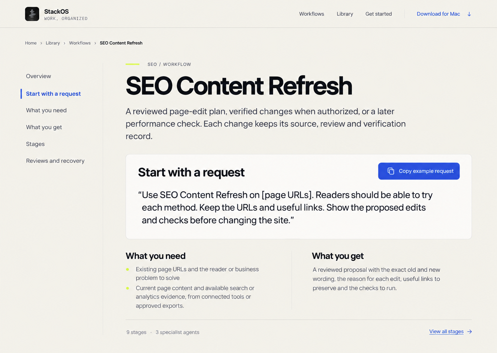
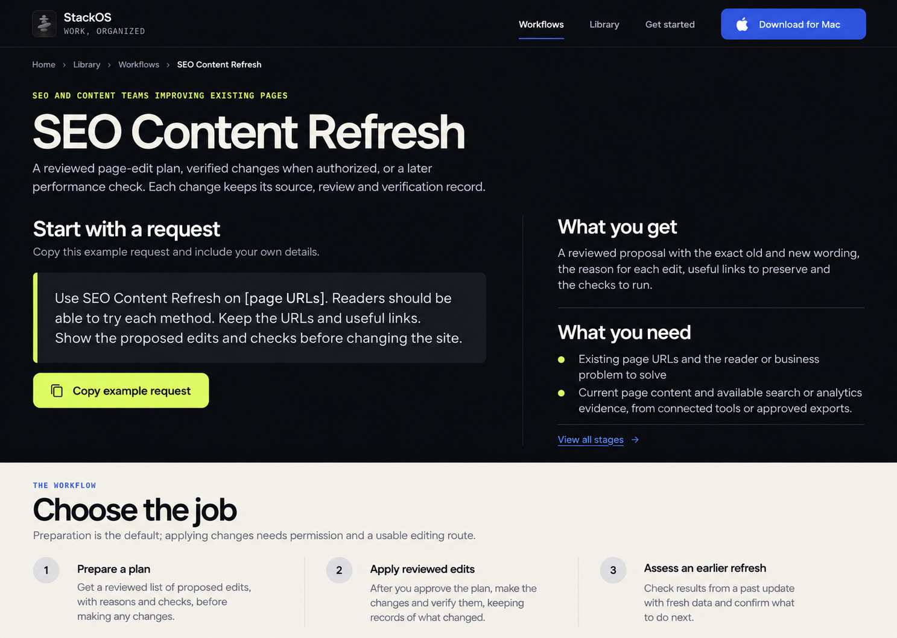
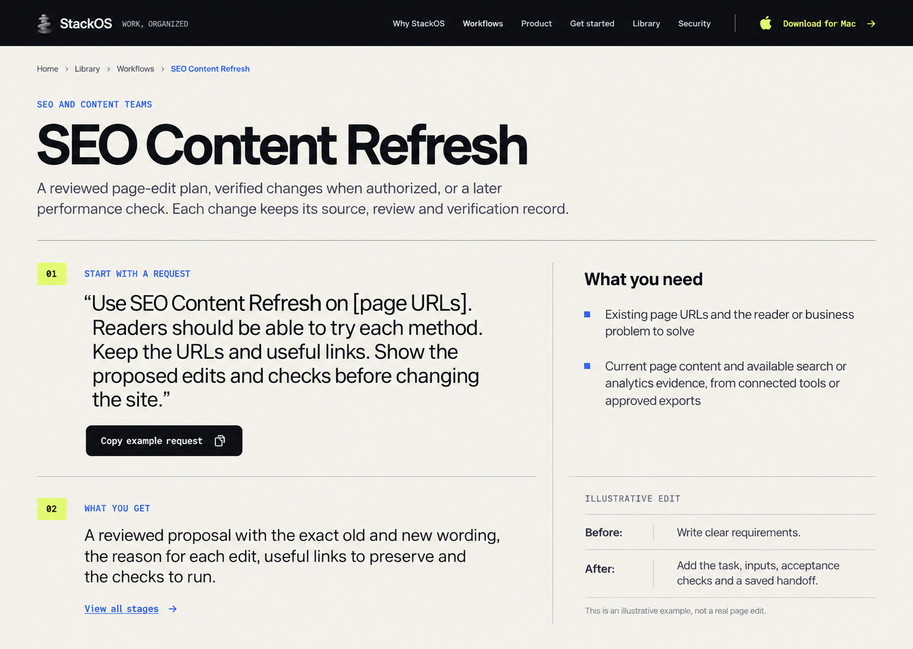

Superseded scope. The user requested content design inside the existing page. Use the current content design review. The broad page redesign suggestions and initial concepts below are historical exploration only.
Design review · October 5, 2026 · StackOS browser
StackOS website template design review
The main problem is hierarchy. Oversized heroes, repeated diagrams and stacked containers delay the information each page exists to provide. Keep the recognizable brand, and organize each template around its reader's task.
Reviewed eight representative public pages at 1440 × 1000, plus workflow, article and catalog openings at 390 × 844. Three independent ImageGen concepts use the same workflow page for comparison. Production remains unchanged.
Changes by template
| Page | Observed issue | Proposed change |
|---|
Home
Screenshot · Full page | Distinctive identity and concrete opening, but the same promotional scale is overused on internal pages. | Reserve the strongest brand expression for this page; favor genuine product evidence over abstract diagrams. |
Library
Screenshot · Full page | Tall hero and count grid delay the three useful entry points. | Bring Learn, Connect and Start to the opening; show concise links to useful jobs. |
Catalog
Screenshot · Full page | No workflow results or filters in the first desktop or mobile viewport. Repeated decorative cards dominate the long page. | Compact title, immediate filters and compact results; move the general definition beneath browsing. |
Workflow
Screenshot · Full page | Starting request and required inputs follow a large hero and oversized problem statement. Many boxed reference sections compete. | Show request, inputs and output first; use a contents rail and compact stages; keep recovery and role details accessible further down. |
Article
Screenshot · Full page | Large left-aligned hero leaves unused right space; reading begins in a differently aligned column. Mobile table handling needs focused follow-up. | Align title, metadata and prose; modest heading scale; reuse contents navigation where useful; ensure tables scroll clearly on mobile. |
Agent
Screenshot · Full page | Generic diagram repeats workflow treatment; many long boxed contract bullets. | Compact mission, responsibilities and input/output summary; linked workflows and detailed contract follow. |
Integration
Screenshot · Full page | Oversized identity and repeated provider heading delay setup/actions. Secondary helper text appears difficult to read. | Show supported work and connection requirements first, then searchable action reference; improve text contrast. |
Guide
Screenshot · Full page | Helpful contents rail already exists, but the opening consumes nearly the entire desktop viewport. | Keep the guide rail and step structure; reduce opening height and expose the first step sooner. |
Shared priorities
- Task-specific information arrives too late. Use smaller internal-page titles and remove repeated generic diagrams.
- Diagrams misattribute planning and role selection to StackOS. Describe agent reasoning and StackOS scope, explicit execution and records accurately.
- Two navigation bars plus breadcrumbs consume space; mobile category strip hides later items off-screen. Simplify navigation hierarchy and provide clear mobile access to every category.
- Consent competes with page content, especially on mobile. Retain clear choices in a more compact accessible composition.
- Small labels and low-contrast secondary text risk poor readability. Measure contrast and keyboard/focus behavior during implementation; increase diagram-label readability or remove diagrams.
Keep the article's readable central column, source links and evidence tables. Keep the workflow's useful distinction between the request, inputs, outputs, review and recovery. The redesign should make that information easier to find.
Current desktop and mobile evidence

The catalog's first desktop screen contains no results or filters.

The starting request is below the hero and large problem statement.
Mobile captures: workflow, article, catalog, and initial consent overlay. The initial banner remains in desktop evidence; “Not now” was selected before later mobile captures.
Three concepts
Numbered in the order displayed in chat. All are raster proposals generated with the built-in ImageGen tool, using the current workflow screenshot and actual StackOS icon. The complete prompts are saved alongside the images.
Option 1 · Open original
Option 2 · Open original
Option 3 · Open original
Implementation boundaries
- StackOS mark and ink/paper/lime/cobalt palette
- Real source-backed content, useful links and evidence tables
- Public URLs, headings, server-rendered text, canonical metadata and internal links
- Current source owners: workflow/preset public fields and article Markdown
- Current approved voice; concept copy is not a new brand foundation
These concepts introduce a proposed “Copy example request” convenience. They do not add workflow execution to the public website. Generated helper text remains draft material and must be reconciled with approved source copy before publication.
Next sequence
- Choose a visual direction.
- Adapt it to catalog, workflow, article, integration and role templates while preserving their different reader tasks.
- Implement shared navigation/type/spacing first, then templates, through the existing engineering workflow.
- Verify desktop/mobile, keyboard access, contrast, crawlable content and URL/metadata preservation before release.
Limits
- Visual review is not a full accessibility audit or measured usability study.
- Homepage full-page capture may contain off-screen animation/lazy-render states; empty regions are not established rendering defects.
- Orchestrator template was mapped from source but no separate live orchestrator screenshot was captured.
- ImageGen concepts are raster design proposals. Generated helper text must be reconciled with approved source copy during implementation.
- No ranking or conversion improvement is established by this design review.
Source mapping and an independent screenshot critique were supplied by the design_template_map reviewer. Full structured record: audit.json. Tracker: website-template-design-review-20261005.